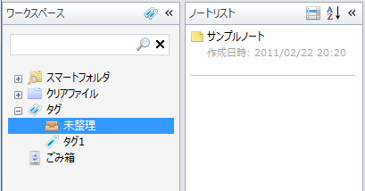
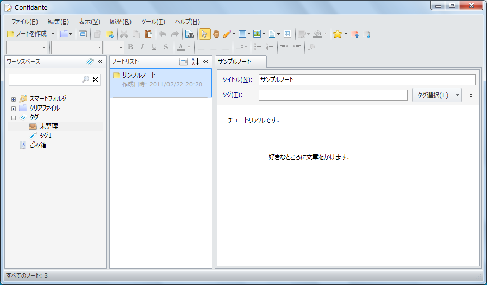

ノートを開く
閉じたファイルをもう一度開いてみましょう。 ノートを開くにはウィンドウ左部のワークスペースペインとノートリストペインを使います。
タグを選ぶ
ワークスペースペインでタグを選択すると，ノートリストペインにそのタグが付けられたノートの一覧が表示されます。 先ほど作ったノートにはまだタグを付けてないので，「未整理」を選択するとノートリストペインに表示されます。

ノートを開く
ノートリストペインに表示されたノートのタイトル部分をクリックするか，タイトル以外の部分をダブルクリックするとノートが開きます。
